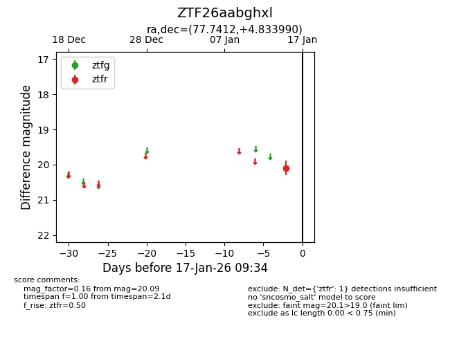
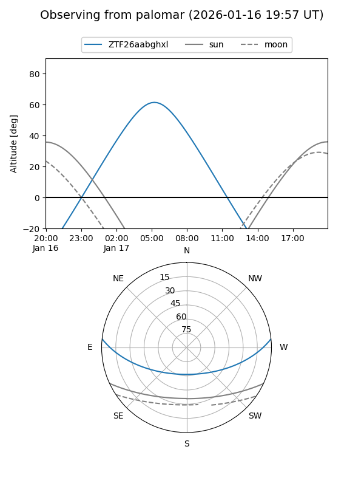

ZTF26aabghxl
Target ZTF26aabghxl at 2026-01-17 09:35
Aliases and brokers:
FINK: link
Lasair: link
ALeRCE: link
alt names
ZTF26aabghxl (ztf,fink_ztf)
Coordinates:
equatorial (ra, dec) = 77.7412,+4.83399
equatorial (HMS+DMS) = 05:10:57.88,+04:50:02.36
galactic (l, b) = (196.3956,-19.75635)
Flags:
Photometry:
last ztfr=20.09
1 ztfr detections
Lightcurve

Visibility


Additional plots